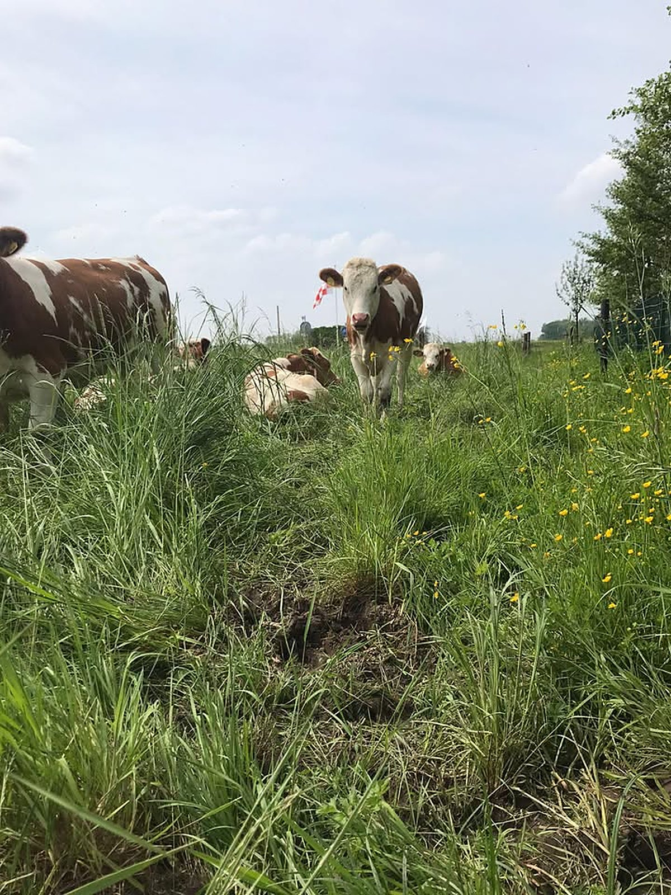
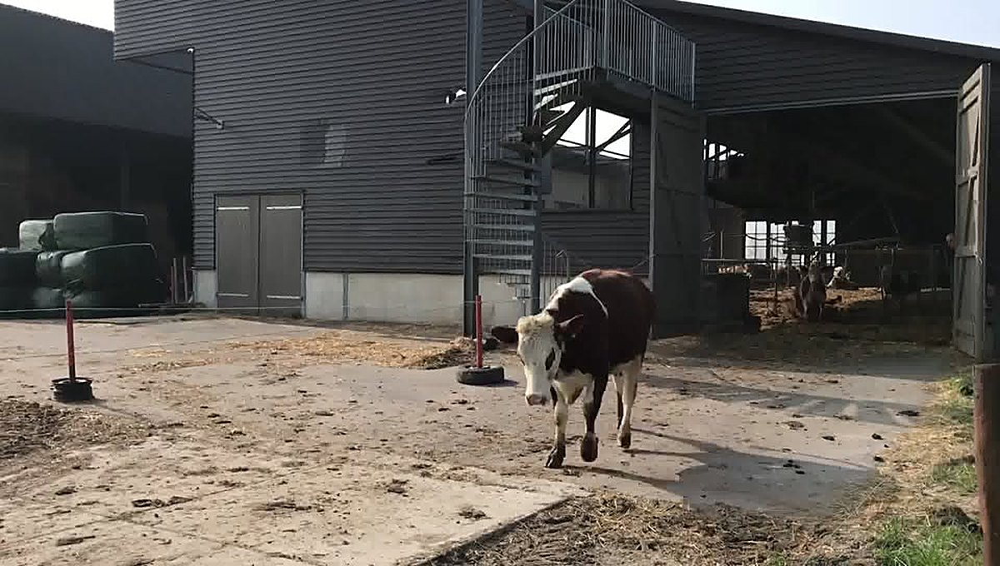
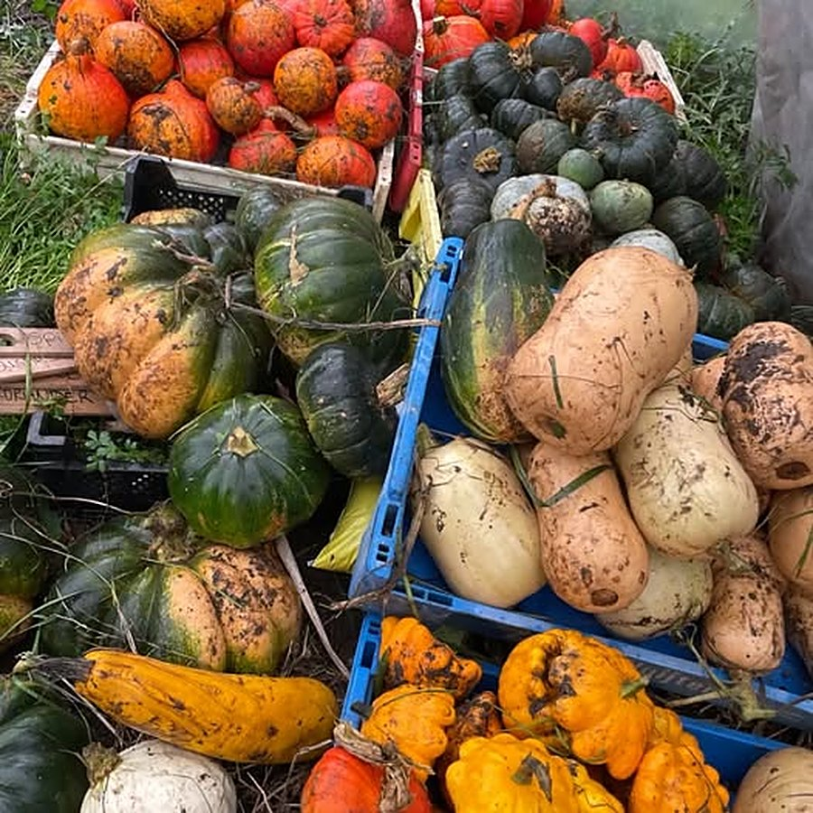

Vlees van onze eigen biokoeien
Elke zaterdag welkom in onze boerderijwinkel in Woudrichem. Met vers brood van bakker Hardeman en kaas uit Genderen erbij.
Wat vind je in de winkel?
Eerlijk en lokaal: van ons eigen land en van vakmensen uit de buurt.
Vlees van eigen biokoeien
Van onze eigen koeien, die op Kraaiveld in de wei lopen.
Vers brood
Gebakken door bakker Hardeman.
Kwaliteitskaas
Kaas uit Genderen, hier vlakbij.
Van het land
In het seizoen onder meer aardappels van eigen land.

Van ons erf in Kraaiveld
Onze koeien lopen in het gras op landgoed Kraaiveld, tussen Woudrichem en Sleeuwijk. Het vlees in de winkel komt van onze eigen biokoeien. Zo weet je precies waar het vandaan komt.
Op zaterdag staat de winkel open. Kom langs, neem een brood en een stuk kaas mee, en zeg de dames van Kraaiveld even gedag.
Pluktuin op hetzelfde land
Op Kraaiveld ligt ook de biologische pluk- en oogsttuin van Akkers van Altena. Met een leuke groep wordt er gepoot, geschoffeld en geoogst, en de oogst wordt verdeeld onder de plukkers. Deze herfst waren dat onder meer de pompoenen.
Zin om mee te doen en te genieten van de natuur, gezelligheid en biologische groenten? Stuur gerust een berichtje.
Meer over de pluktuin →
Kom langs of stuur een berichtje
Een vraag over het vlees of iets dat je zaterdag wilt ophalen? App ons gerust.